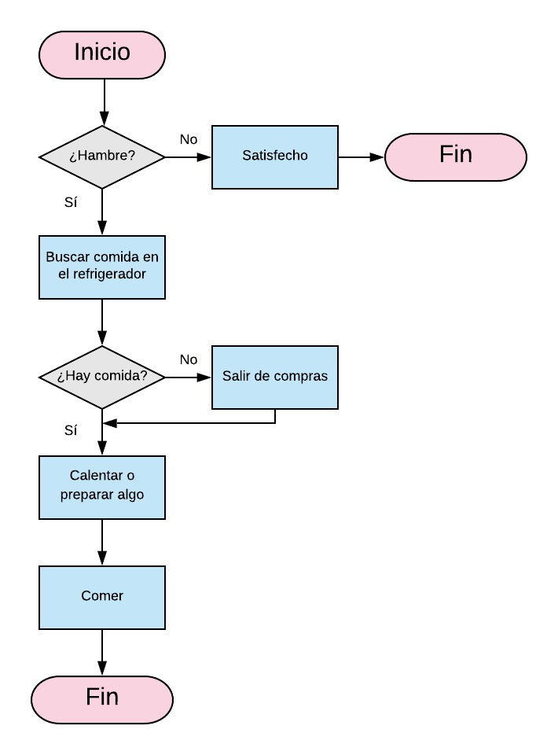
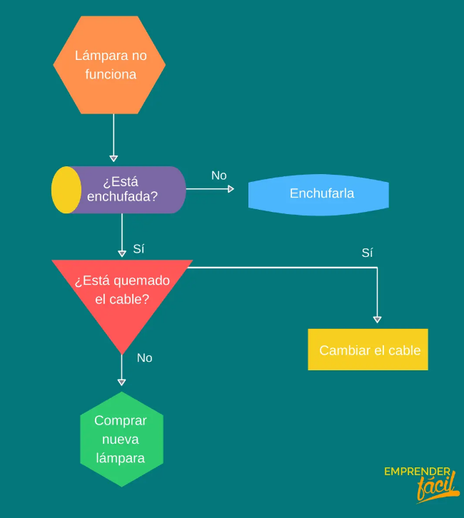

Los diagramas de flujo son representaciones gráficas de procesos o algoritmos que utilizan símbolos y líneas para indicar la secuencia de pasos. Estas representaciones visuales son ampliamente utilizadas en diversas disciplinas para ilustrar procesos y facilitar la comprensión. A continuación, exploraremos en detalle los aspectos clave de los diagramas de flujo, su estructura, aplicaciones y una breve mirada a su historia.
Los diagramas de flujo representan visualmente la secuencia de pasos de un proceso. Utilizan
símbolos estándar y conectores para mostrar la dirección del flujo de información o control.
Algunos símbolos comunes incluyen:
Inicio/Fin: Representa el inicio o fin del proceso.
Proceso: Indica una operación o acción.
Decisión: Representa una bifurcación en el proceso basada en una condición.
Conector: Une diferentes partes de un diagrama.
Entrada/Salida: Indica la entrada o salida de datos.

Clases de Caracteres: Permiten especificar un conjunto de caracteres posibles. Por ejemplo,
"[aeiou]" coincidirá con cualquier vocal.
Agrupaciones y Capturas: Los paréntesis se utilizan para agrupar elementos y crear subexpresiones.
También permiten realizar capturas para extraer información específica de una cadena coincidente.
Anclas: "^" y "$" se utilizan para representar el inicio y el final de una línea, respectivamente.
Diseño de Algoritmos: Los diagramas de flujo son útiles para visualizar algoritmos y procesos lógicos.
Documentación de Procesos: Facilitan la documentación y comprensión de procedimientos y flujos de trabajo.
Desarrollo de Software: En el diseño y planificación de software para representar la lógica de funcionamiento.
Enseñanza y Aprendizaje: Se utilizan como herramientas educativas para explicar conceptos y procesos de manera clara.
Los diagramas de flujo tienen sus raíces en los diagramas de procesos utilizados en la década de 1920 y 1930 en
ingeniería industrial y análisis de gestión. Sin embargo, el término "diagrama de flujo" se popularizó en la década
de 1940 gracias al ingeniero industrial Frank Gilbreth.
Durante la Segunda Guerra Mundial, los diagramas de flujo se utilizaron extensamente en el ámbito militar
y la industria para representar procesos de manufactura y procedimientos operativos. Desde entonces, han
evolucionado y se han convertido en una herramienta estándar en diversos campos.
